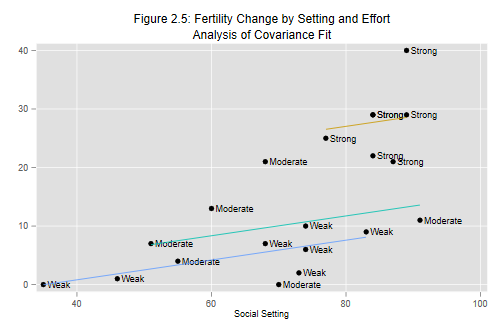

We now consider models that include as predictors a continuous variable and a discrete factor, sometimes called ancova models. As usual, we read the data and group effort into categories, so we can run this unit by itself.
. use https://grodri.github.io/datasets/effort, clear (Family Planning Effort Data) . recode effort (0/4=1 "Weak") (5/14=2 "Moderate") /// > (15/max=3 "Strong"), gen(effort_g) label(effort_g) (20 differences between effort and effort_g)
The anova command in Stata can also fit analysis of
covariance models, but we will continue to use regression with factor
variables via regress.
Here’s the model treating social setting as a covariate with a linear effect and program effort as a factor variable with three categories
. regress change setting i.effort_g
Source │ SS df MS Number of obs = 20
─────────────┼────────────────────────────────── F(3, 16) = 21.55
Model │ 2124.50633 3 708.168776 Prob > F = 0.0000
Residual │ 525.693673 16 32.8558546 R-squared = 0.8016
─────────────┼────────────────────────────────── Adj R-squared = 0.7644
Total │ 2650.2 19 139.484211 Root MSE = 5.732
─────────────┬────────────────────────────────────────────────────────────────
change │ Coefficient Std. err. t P>|t| [95% conf. interval]
─────────────┼────────────────────────────────────────────────────────────────
setting │ .1692677 .1055505 1.60 0.128 -.0544894 .3930247
│
effort_g │
Moderate │ 4.143915 3.191179 1.30 0.213 -2.621082 10.90891
Strong │ 19.44761 3.729295 5.21 0.000 11.54186 27.35336
│
_cons │ -5.954036 7.16597 -0.83 0.418 -21.14521 9.237141
─────────────┴────────────────────────────────────────────────────────────────
. estimates store ancova // save results for later use
Here we told Stata that effort_g is a factor and, by
omission, that setting is a covariate. (There is a
c. prefix for covariates, but it is implied in regression
commands, except for interactions, as we’ll see soon.)
Compare the coefficients with Table 2.23 in the notes. Countries with strong programs show steeper fertility declines, on average 19 percentage points more, than countries with weak programs and the same social setting.
To test the significance of the net effect of effort we use the
testparm command.
. testparm i.effort_g
( 1) 2.effort_g = 0
( 2) 3.effort_g = 0
F( 2, 16) = 14.05
Prob > F = 0.0003
We obtain an F-ratio of 14.1 on 2 and 16 d.f., a significant result. [The complete anova in Table 2.24 in the notes can be obtained from the model with a linear effect of setting in Section 2.4 and the present model.]{stata}
This analysis has adjusted for linear effects of setting, whereas the analysis in Section 2.7 adjusted for differences by setting grouped in three categories. As it happens, both analyses lead to similar estimates of the difference between strong and weak programs at the same level of setting.
Let us do Figure 2.5, a plot of change versus setting identifying the level of program effort corresponding to each point. I will also superimpose the three parallel lines corresponding to the fitted model.
This is easily done using the graph twoway command
–which can be shortened to twoway– to combine a
scatter plot with three line plots, one for
each category of effort.
. predict ancovafit
(option xb assumed; fitted values)
. twoway (scatter change setting, mlabel(effort_g)) ///
> (line ancovafit setting if effort_g == 1, sort) ///
> (line ancovafit setting if effort_g == 2, sort) ///
> (line ancovafit setting if effort_g == 3, sort) ///
> , ///
> title("Figure 2.5: Fertility Change by Setting and Effort") ///
> subtitle("Analysis of Covariance Fit") legend(off)
. graph export fig25.png, width(500)replace
file fig25.png saved as PNG format

Note how each subplot can have its own if condition. We
also specify the sort option, which determines the order in
which the points are drawn, pretty important when they will be joined by
lines. (Try line change setting to see what can happen if
you do a line plot on unsorted data. With a linear fit like Figure 2.5
the consequence of leaving out sort is not apparent because
all the points lie in a straight line.)
If you wanted to label the points using the letters w,
m and s for weak, moderate and strong, as done in the
notes, you would have to define a new label for
effort_g.
Let us turn to the comparison of adjusted and unadjusted declines in Table 2.26, a useful way to present regression results to a non-technical audience.
We start by restoring the ancova estimates and then
predict fertility decline in each country at its observed level of
effort, but with social setting set to 72.1, which is the sample
mean:
. estimates restore ancova (results ancova are active now) . gen adj_change = _b[_cons] + _b[setting] * 72.1 + /// > _b[2.effort_g]*(effort_g==2) + _b[3.effort_g]*(effort_g==3) . label var adj_change "Adjusted change at mean setting"
Here we accessed the coefficients from the last regression as
_b[varname], but
_coef[varname] also
works. This is better than typing them from the output because it is
less error prone and we don’t lose precision.
Next we tabulate our data by level of effort and summarize observed
and adjusted change. We use the tabstat command instead of
tabulate, summarize as done ealier, because we need summary
statistics for two variables:
. tabstat change adj_change, by(effort_g) statistics(mean)
Summary statistics: Mean
Group variable: effort_g (RECODE of effort (Program Effort))
effort_g │ change adj_ch~e
─────────┼────────────────────
Weak │ 5 6.250163
Moderate │ 9.333333 10.39408
Strong │ 27.85714 25.69777
─────────┼────────────────────
Total │ 14.3 14.3
─────────┴────────────────────
Countries with strong program average a 28% decline in fertility, but they also tend to have higher settings; we estimate a slightly smaller decline of about 26% at average social setting. The estimate is based on the model, which adjusts linearly for setting and assumes that the slope is the same at all levels of effort. The next step will be to examine this assumption.
By the way Stata can automate this type of calculation using the
margins command introduced in version 11 (or the
adjust command in earlier versions). We proceeded from
first principles because the calculations are easy to do and you can
understand exactly what is being done.
On the other hand, once you get used to the margins
command you learn to appreciate it’s power. It understands factor
variables, and has the added advantage of producing standard errors of
the adjusted predictions. So here’s how to predict fertility decline by
levels of effort at mean setting:
. margins i.effort_g, at( (mean) setting)
Adjusted predictions Number of obs = 20
Model VCE: OLS
Expression: Linear prediction, predict()
At: setting = 72.1 (mean)
─────────────┬────────────────────────────────────────────────────────────────
│ Delta-method
│ Margin std. err. t P>|t| [95% conf. interval]
─────────────┼────────────────────────────────────────────────────────────────
effort_g │
Weak │ 6.250162 2.30248 2.71 0.015 1.369122 11.1312
Moderate │ 10.39408 2.431767 4.27 0.001 5.238961 15.54919
Strong │ 25.69777 2.550846 10.07 0.000 20.29022 31.10532
─────────────┴────────────────────────────────────────────────────────────────
Wasn’t that easy? Having ran the regression using factor variables, I just asked for the effort margin at mean setting … literally.
We will now allow the linear relationship between change and setting to vary with level of effort, by introducing an interaction between setting and the indicators of effort. Before we do that we center the index of social setting by subtracting the mean, a practice I highly recommend to simplify the interpretation of “main” effects when the model has interactions:
. quietly summarize setting . gen setting_c = setting - r(mean)
Here we used the fact that the mean is available as
r(mean) after summarize. (To see all the
results that can be extracted this way type
return list.)
We can now run the regression using # to add an
interaction between centered setting and grouped effort. Note also that
we need to use a c. prefix to clarify that we can to
interact setting as a covariate.
. regress change setting_c i.effort_g c.setting_c#i.effort_g
Source │ SS df MS Number of obs = 20
─────────────┼────────────────────────────────── F(5, 14) = 12.13
Model │ 2153.09941 5 430.619882 Prob > F = 0.0001
Residual │ 497.10059 14 35.507185 R-squared = 0.8124
─────────────┼────────────────────────────────── Adj R-squared = 0.7454
Total │ 2650.2 19 139.484211 Root MSE = 5.9588
─────────────────────┬────────────────────────────────────────────────────────────────
change │ Coefficient Std. err. t P>|t| [95% conf. interval]
─────────────────────┼────────────────────────────────────────────────────────────────
setting_c │ .1835741 .1396981 1.31 0.210 -.1160486 .4831968
│
effort_g │
Moderate │ 3.583729 3.662354 0.98 0.344 -4.271239 11.4387
Strong │ 13.3332 8.209163 1.62 0.127 -4.273701 30.9401
│
effort_g#c.setting_c │
Moderate │ -.0868366 .2325831 -0.37 0.714 -.5856776 .4120045
Strong │ .4567037 .6039241 0.76 0.462 -.8385847 1.751992
│
_cons │ 6.355826 2.477298 2.57 0.022 1.04255 11.6691
─────────────────────┴────────────────────────────────────────────────────────────────
Compare the parameter estimates with Table 2.27 in the notes. You also have all the information required to produce the hierarchical anova in Table 2.28.
Because we centered setting, the coefficients for moderate and strong programs summarize differences by effort at mean setting, rather than at setting zero (which is well outside the range of the data). Thus, fertility decline averages 13 percentage points more under strong than under weak programs in countries with average social setting.
The interaction terms can be used to compute how these differences vary as we move away from the mean. For example in countries which are ten points above the mean social setting, the strong versus weak difference is almost five percentage points more than at the mean. These differences, however, are not significant, as we can’t reject the hypothesis that the three slopes are equal.
. testparm c.setting_c#i.effort_g
( 1) 2.effort_g#c.setting_c = 0
( 2) 3.effort_g#c.setting_c = 0
F( 2, 14) = 0.40
Prob > F = 0.6761
Exercise. Plot the data and the regression lines implied by the model with an interaction between linear setting and level of effort. Note how the difference between strong and weak programs increases with social setting. The interaction is not significant, however, so we have no evidence that the lines are not in fact parallel.